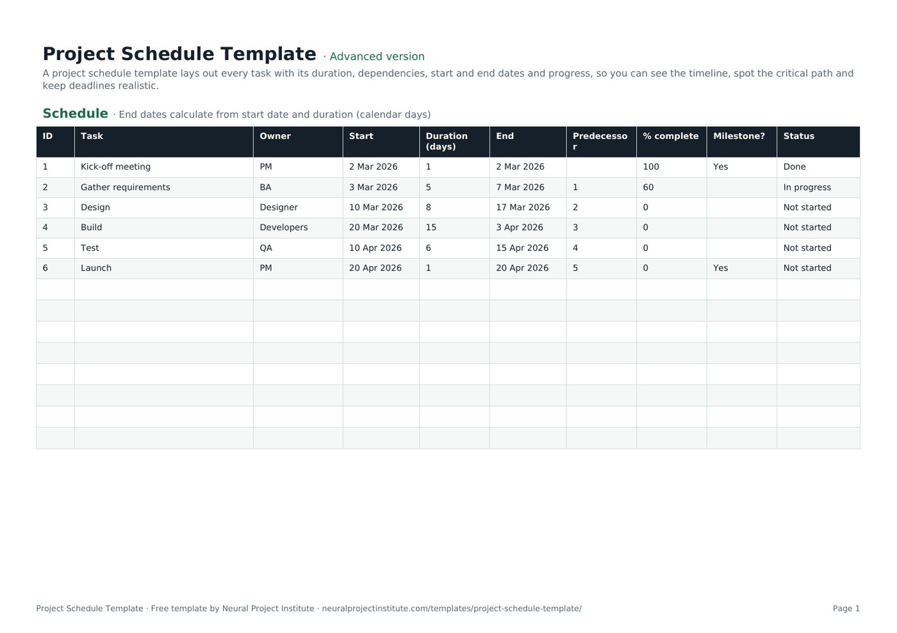

Free Project Schedule Template (Google Sheets, Excel, PDF)
A project schedule template lays out every task with its duration, dependencies, start and end dates and progress, so you can see the timeline, spot the critical path and keep deadlines realistic.

Free download · no sign-up
Get the project schedule template
Pick your level and format: Google Sheets, Excel or a print-ready PDF. Spreadsheets include dropdowns, formulas and sample rows you can overwrite.
Project Schedule Template preview
| ID | Task | Owner | Start | Duration (days) | End | Predecessor | % complete | Milestone? | Status |
|---|---|---|---|---|---|---|---|---|---|
| 1 | Kick-off meeting | PM | 2 Mar 2026 | 1 | 2 Mar 2026 | 100 | Yes | Done | |
| 2 | Gather requirements | BA | 3 Mar 2026 | 5 | 7 Mar 2026 | 1 | 60 | In progress | |
| 3 | Design | Designer | 10 Mar 2026 | 8 | 17 Mar 2026 | 2 | 0 | Not started | |
| 4 | Build | Developers | 20 Mar 2026 | 15 | 3 Apr 2026 | 3 | 0 | Not started | |
| 5 | Test | QA | 10 Apr 2026 | 6 | 15 Apr 2026 | 4 | 0 | Not started | |
| 6 | Launch | PM | 20 Apr 2026 | 1 | 20 Apr 2026 | 5 | 0 | Yes | Not started |
Sample rows are examples: replace them with your own.
What's included
- Tasks, owners, start dates, durations, auto-calculated end dates, predecessors, % complete, milestones and status
- Schedule: ID, Task, Owner, Start, Duration (days), End, Predecessor, % complete, Milestone?, Status
How to use the project schedule template
- List tasks in order, using your work breakdown structure as the source.
- Enter each task's start date and duration; the end date calculates automatically.
- Record predecessors to show task dependencies.
- Flag milestones and assign owners.
- Update % complete and status weekly, and adjust later dates when a predecessor slips.
Tips for getting the most from it
- Find the longest chain of dependent tasks: that is your critical path.
- Add buffers to risky tasks.
- Baseline the schedule once approved.
- Show it as a Gantt chart for stakeholders.
Learn more
Frequently asked questions
What is a project schedule template?
A project schedule template lists tasks with durations, dependencies, start and end dates and progress so you can plan and track a project's timeline.
Is this project schedule template free?
Yes. The project schedule template is free in Google Sheets, Excel and PDF.
How do I create a project schedule with the project schedule template?
List tasks, estimate durations, add dependencies and start dates, then let the template calculate end dates.
Can I use the project schedule template in Excel?
Yes. The .xlsx project schedule template works in Excel with date formulas.
Is there a project timeline template in Excel?
Yes. This project schedule template doubles as a project timeline template in Excel; pair it with the Gantt chart template for a visual view.
What is a workback schedule template?
A workback schedule starts from the deadline and works backwards; use this project schedule template by entering the last task first and counting back.
How is a project schedule template different from a project plan template?
A project schedule focuses on time and sequence; a project plan also covers goals, scope, budget and governance.
Does the project schedule template show the critical path?
It records predecessors so you can identify the critical path; scheduling software calculates it automatically.
How often should I update a project schedule template?
Update the project schedule weekly, or more often on short projects.
Can I share the project schedule template with my team?
Yes. Use the Google Sheets project schedule template to share a live version.
What is the difference between the beginner, advanced and expert project schedule template?
The beginner project schedule template keeps only the essential columns on one tab; the advanced version is the full template with every tab, dropdown and formula; the expert version adds instructions, a dashboard that summarises your data automatically, status colours and a revision history.
Related templates
 Project Plan TemplateFree project plan template with goals, scope, deliverables, tasks, owners, dates and…Beginner · Advanced · Expert
Project Plan TemplateFree project plan template with goals, scope, deliverables, tasks, owners, dates and…Beginner · Advanced · Expert Gantt Chart TemplateFree Gantt chart template: tasks, owners, dates and a week-by-week timeline you fill in.…Beginner · Advanced · Expert
Gantt Chart TemplateFree Gantt chart template: tasks, owners, dates and a week-by-week timeline you fill in.…Beginner · Advanced · Expert Critical Path TemplateFree critical path method template: activities, durations, predecessors, early and late…Beginner · Advanced · Expert
Critical Path TemplateFree critical path method template: activities, durations, predecessors, early and late…Beginner · Advanced · Expert Project Charter TemplateFree project charter template covering purpose, objectives, scope, milestones, budget,…Beginner · Advanced · Expert
Project Charter TemplateFree project charter template covering purpose, objectives, scope, milestones, budget,…Beginner · Advanced · Expert Work Breakdown Structure (WBS) TemplateFree work breakdown structure template with WBS codes, levels, deliverables, owners,…Beginner · Advanced · Expert
Work Breakdown Structure (WBS) TemplateFree work breakdown structure template with WBS codes, levels, deliverables, owners,…Beginner · Advanced · Expert